Overview
While gifting is central to Jo Malone's brand, the personalisation offering online was both limited and difficult to discover. By introducing a customisation tool accessible from anywhere on the site, personalisation became a core part of the journey, increasing AOV and encouraging repeat gifting.
My Role
Senior Product Designer · PM · External development agency
Tools
Figma · Jira · Wrike · User interviews · User testing
Key Goal
Increase gifting feature interaction by 10%
Discover
The discovery phase combined three research methodologies to build a complete picture of the customisation experience – from our current offering, to industry benchmarks, as well as real user wants and needs.
Methodology 01
Audit
End-to-end audit of the online and in-store gifting offering – mapping all entry points, personalisation tools, and where users were dropping off.
Methodology 02
User interviews
Structured interviews with 8 customers to understand how they experienced the current personalisation offering and what they'd want from it.
Methodology 03
Competitor benchmarking
Analysis of leading luxury brands to identify best-in-class personalisation patterns and uncover opportunities for Jo Malone to differentiate.
The engraving overlay was the only personalisation experience on the website. It was triggered by a mostly missed CTA. It performed poorly and had a poor UX on mobile.
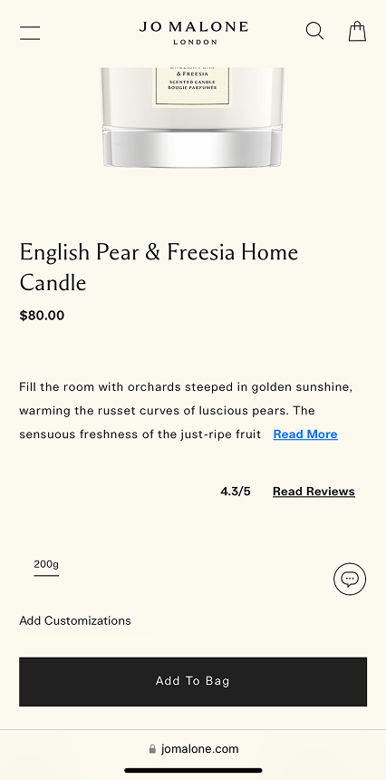
'Add customisation' was lost within the hierarchy
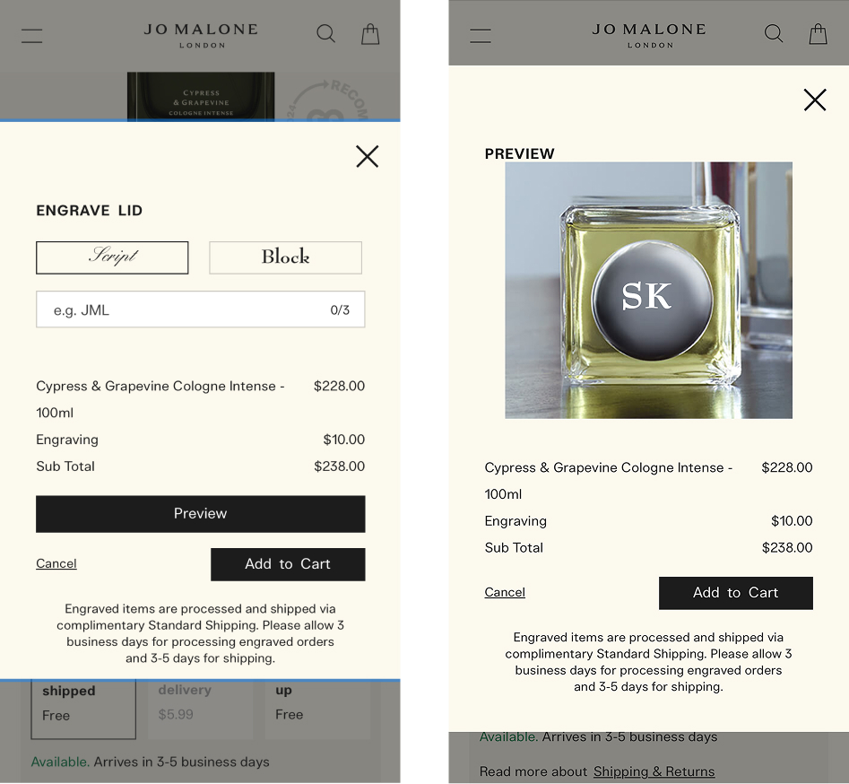
On mobile user had to tab between preview image and text field input, a UX that was frustrating and inefficient

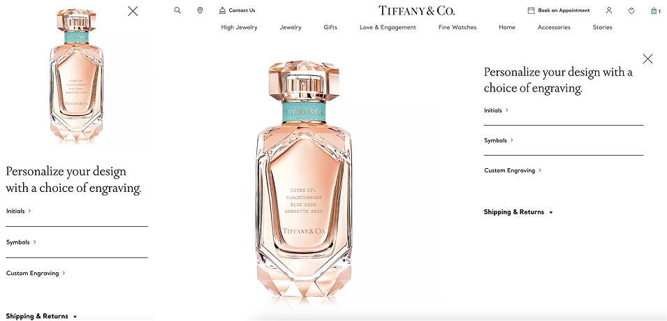
Tiffany & Co.
Multi-step PDP personalisation
Guided, step-by-step engraving flow with real-time preview directly on the PDP – personalisation central to the purchase decision, not an afterthought.
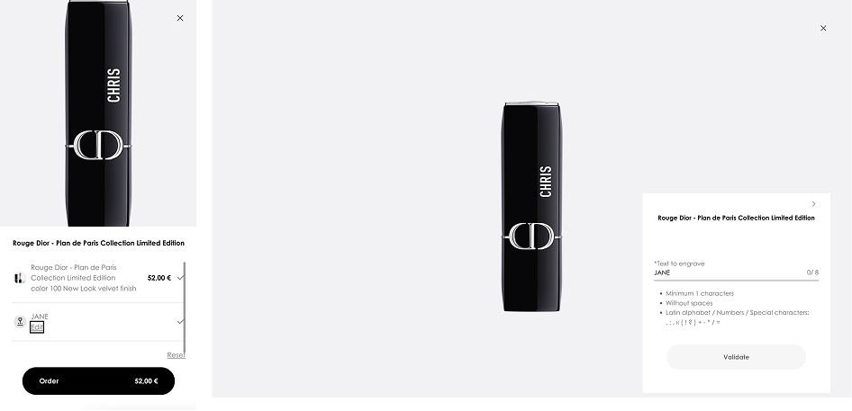
Dior
Dedicated customisation hub
Standalone personalisation destination accessible from the main nav – consolidates all options and positions customisation as a core brand pillar.
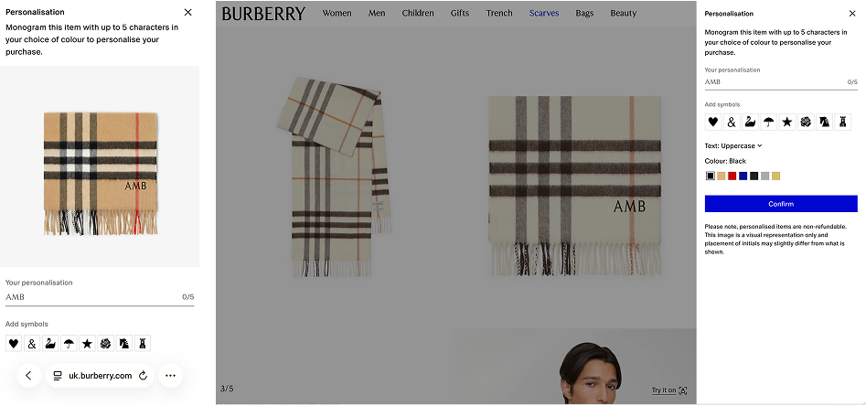
Burberry
Live product preview
Real-time rendering as users select monogramming, colours, and styles – removes uncertainty and drives emotional engagement with the product.
Define
The gifting and personalisation offering was scattered across disconnected parts of the site and failing to reflect the variety of options offered in-store, resulting in high drop-off and low engagement.
Engraving on the PDP only
Gift wrap only accessible in checkout
In-store: engraving, charms, fabric patches, caps, embossing
Online: text engraving only
High drop-off within the existing engraving overlay. 0.32% of users saved an engraving item to cart in 90-days.
What users told us
"I knew engraving was possible but I couldn't find it, I ended up just buying the box as-is."
Participant 2 · Regular gifter"I didn't realise you could personalise the box, I thought you could only add text to the bottle"
Participant 5 · Occasional buyer"Being able to see what the finished gift looks like before I commit would make me so much more confident spending the money."
Participant 3 · First-time gifter"I'd want everything in one place – pick the scent, personalise the bottle, sort the box – without jumping around the site."
Participant 7 · Loyalty customerMissed opportunity
There was a clear opportunity to create a hub offering all personalisation options in one place – accessible not just from the PDP, but from anywhere on the site.
Ideation
Audit findings and user research were translated into HMW questions to guide ideation. Five core problem areas emerged, each pointing toward a different design challenge within the personalisation journey.
Problem
Users do not understand what parts of the product can be customised.
HMW
How might we clearly show which elements are customisable and how to interact with them?
Problem
Users lose track of their customisation choices.
HMW
How might we collate all selected customisations in one place for customers to refer to at any time?
Problem
Users can't visualise their final customisation combination.
HMW
How might we provide real-time, visual feedback to reassure users as they customise?
Problem
Users don't realise that personalisation options are optional.
HMW
How might we make it clear that users can personalise only what they care about, without overwhelming them?
Problem
Users don't realise there are different options for product customisation and gift wrap personalisation.
HMW
How might we distinguish between personalising the product vs. the packaging within the journey?
User flow – Personalisation Hub
Early explorations – navigation and flow structure
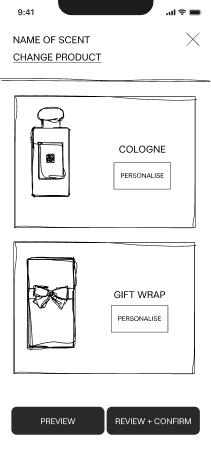
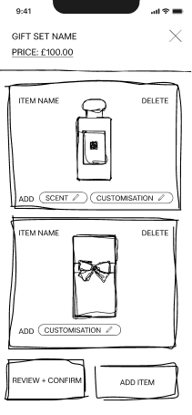
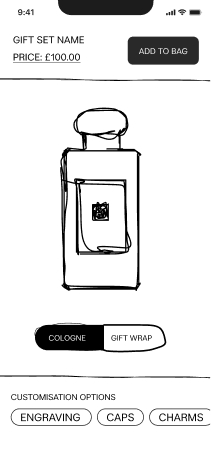
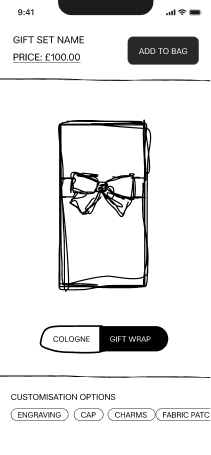
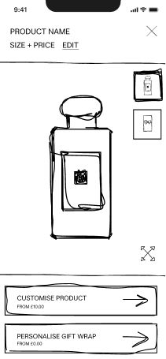
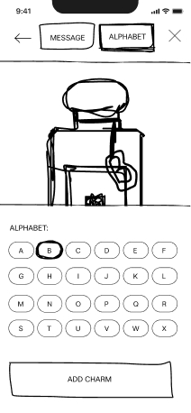
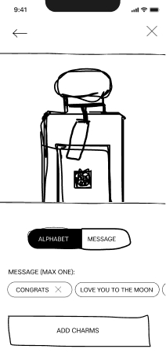
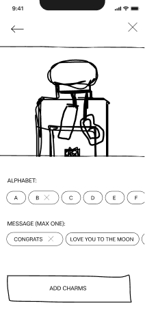
Test
Two competing approaches were tested with 10 participants (5 existing, 5 new) to understand which navigational flow best served the personalisation journey – capturing emotional reactions, friction points, and brand perception throughout.
Approach
A menu-driven experience presenting all customisation options upfront. Users choose their own path – adding personalisations in any order, skipping what they don't want.
Key finding
Preferred by the majority. Felt premium, elegant, and aligned with Jo Malone's brand. Users appreciated the flexibility and felt in control of the experience without being overwhelmed.
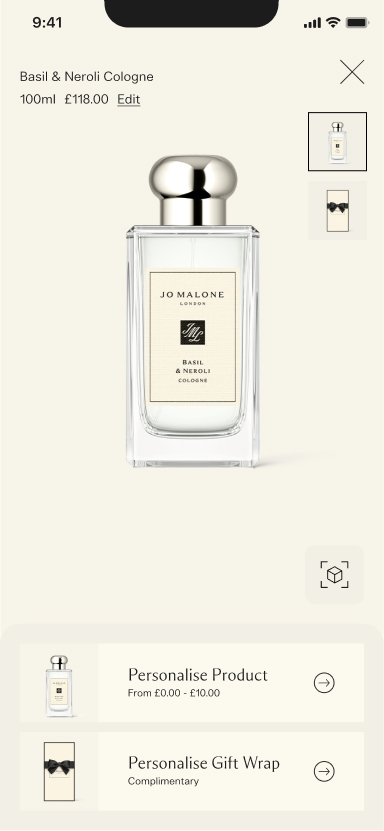
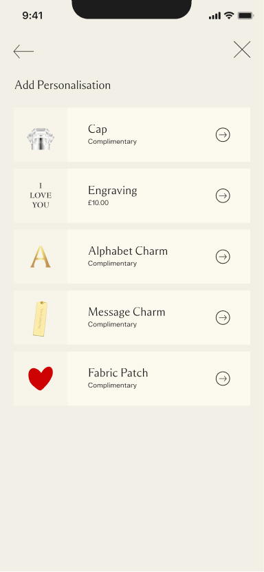
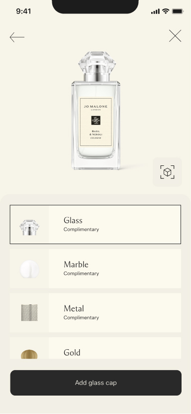
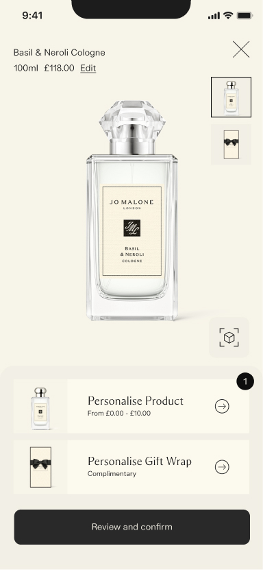
Approach
A step-by-step guided journey walking users through each customisation option in sequence, one per screen. Clear progress indicator (Step X of 8) throughout.
Key finding
Found overly restrictive by most participants. Redundant screens caused friction – users felt slowed down by steps they had no interest in. The length undermined the premium feel.
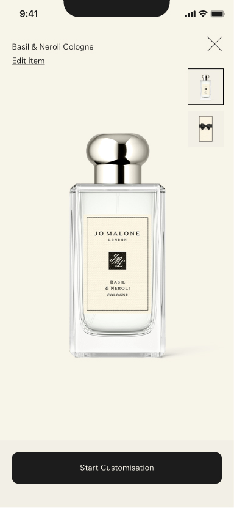
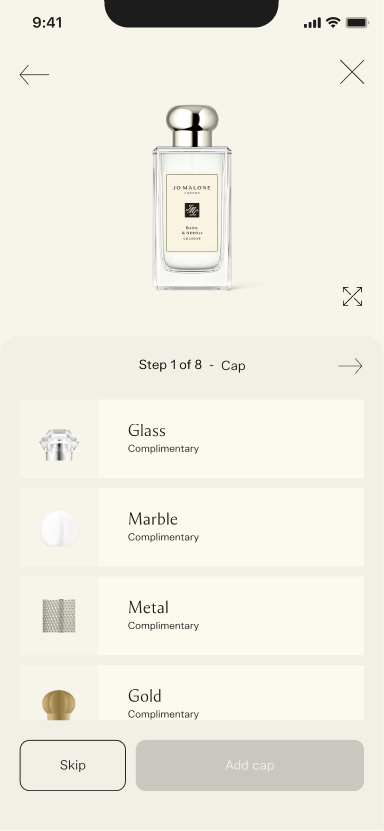
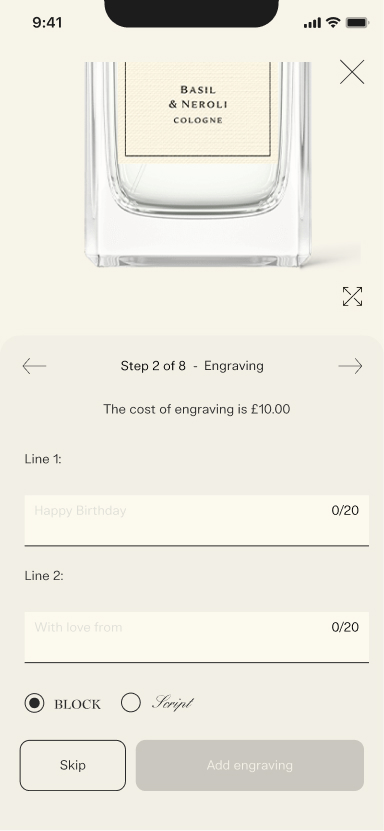
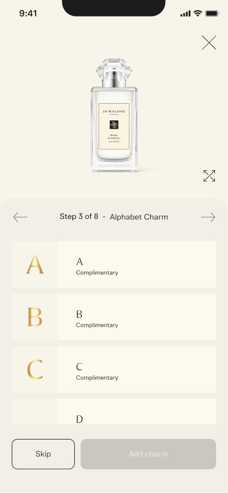
Insight
Clearer visual distinction between product and gift box personalisation needed
Solution
Merged product and box options into one menu
Insight
Desire for real-time previews as selections are made
Solution
'Your Selections' persistent accordion
Insight
Review screens felt redundant and lengthened the process unnecessarily
Solution
Removed the separate review step
Prototype A
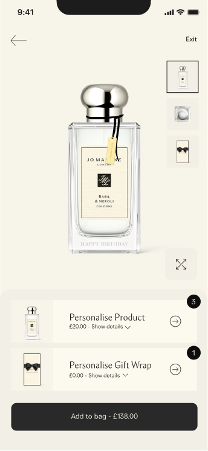
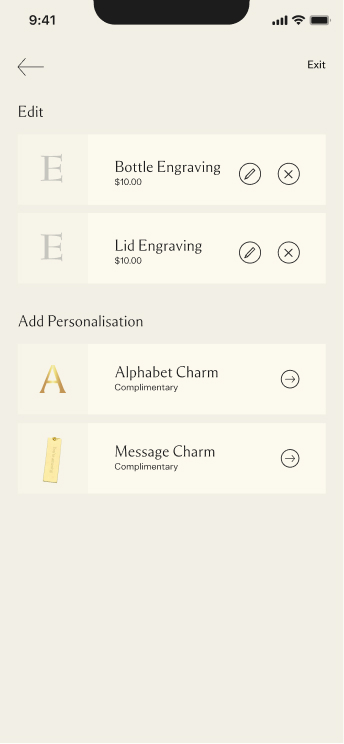
Separate review step showing all selections before confirming. Felt like an extra step.
Prototype B
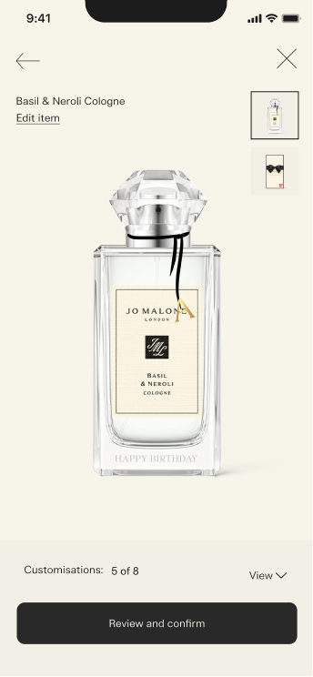
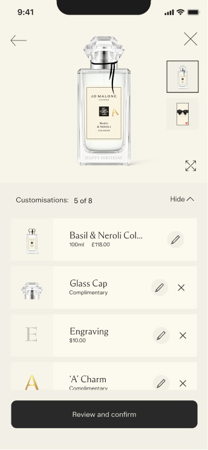
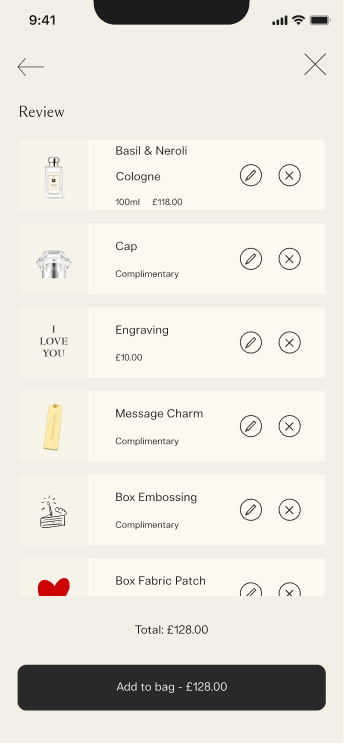
Longer review flow after 8 steps – lengthened the journey and frustrated users who'd already made decisions.
Merged – final solution
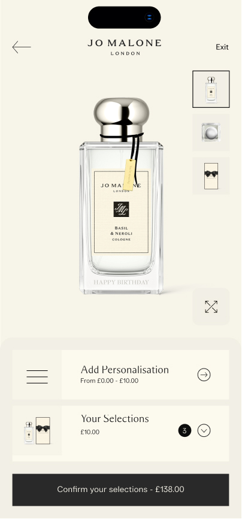
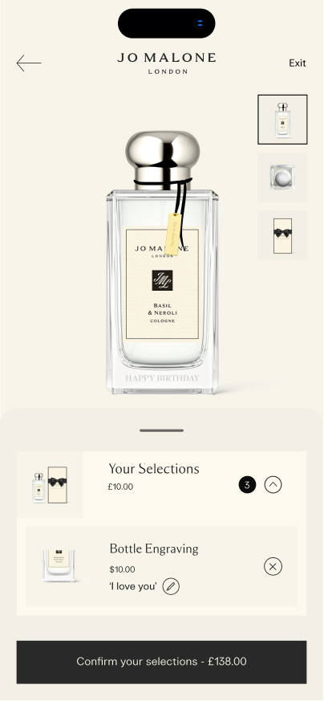
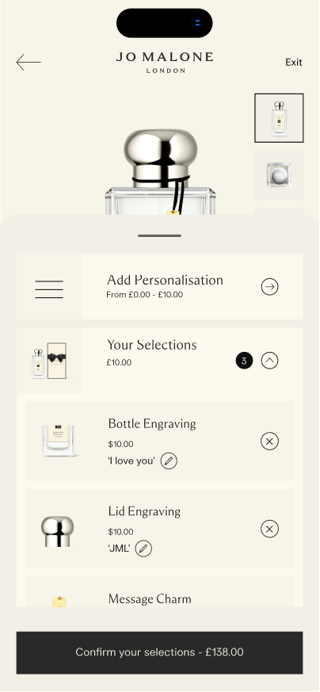
Persistent 'Your Selections' accordion removes the need for a separate review step – overview always accessible.
Phased approach
Given the technical complexity and the need to build back-end infrastructure alongside the front-end experience, delivery was structured across three phases – each with a defined market scope, KPIs, and release target.
Phase 01
Engraving UI
Market: Global · Target: March 25
KPIs
Phase 02
Launch 'Light' Customisation tool
Market: UK only · Target: Aug 25
KPIs
Phase 03
All markets and full offering
Market: Global · Target: Dec 25
KPIs
Impact
+8%
Gifting feature uplift
Increase in gifting feature interaction within the first quarter of launch, driven by improved discoverability and the new customisation tool.
+4%
AOV increase
Uplift in average order value as customers added personalisation options such as engraving and charms to their purchases.
+5%
Repeat gifting
Increase in repeat gifting purchases within 90 days, attributed to the personalised experience encouraging customers to return.
Business impact
Luxury gifting authority
Positioned JML as a leader in luxury gifting by aligning online and in-store personalisation offerings for the first time.
Scalable framework
Created a scalable personalisation framework that can extend across all product categories and markets as the programme grows.
Reflection
Flexibility beats guidance in luxury
A guided, linear flow felt efficient in theory but created friction in practice. Luxury customers want to feel in control, letting them choose their own path aligned better with brand expectations.
Persistent context removes the need for review steps
Surfacing selected customisations as a persistent, accessible summary eliminated the friction of a dedicated review screen, shortening the journey without removing the reassurance users needed.
Phase 1 infrastructure unlocks everything
A phased approach was essential, Phase 1's engraving infrastructure work was a prerequisite for all subsequent personalisation features. Establishing the foundation early de-risked the larger Phase 3 ambition.